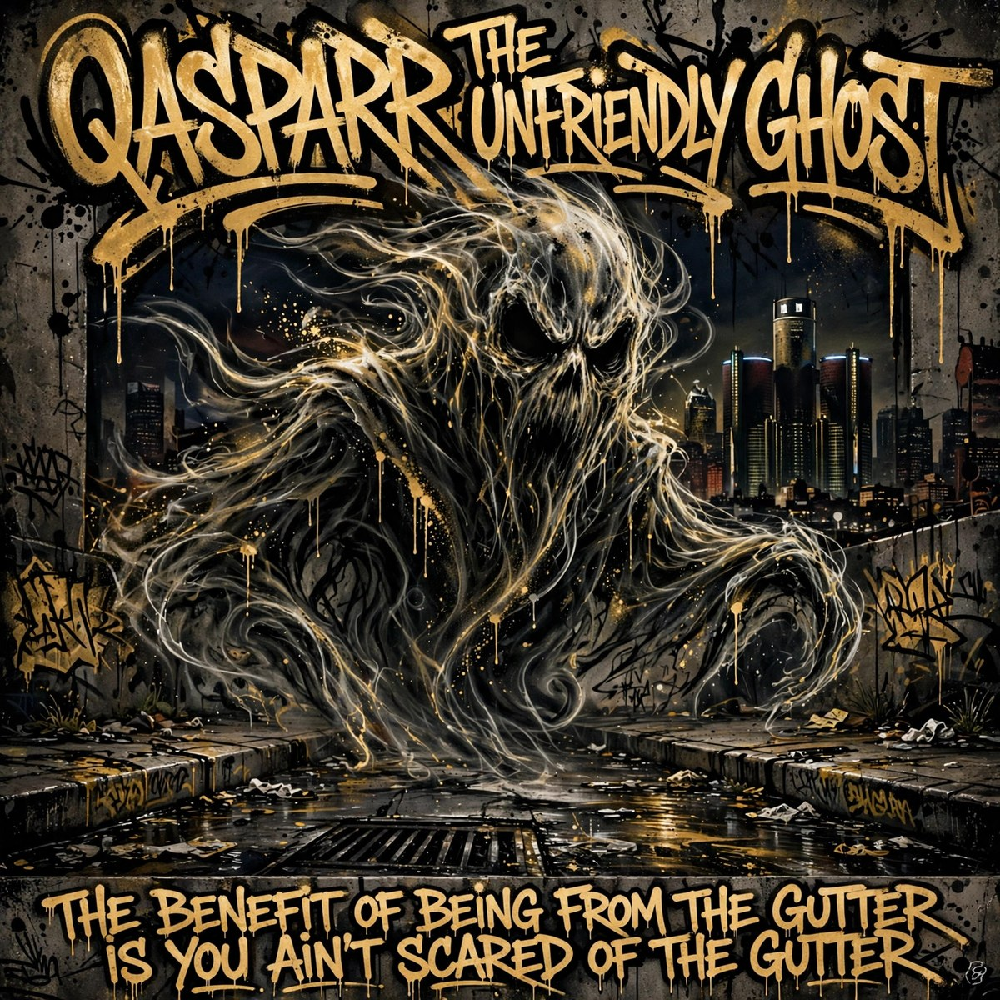

BLEATS PUBLISHING GROUP · SPARROW, PUBLISHER OF RECORD

QASPARR THE UNFRIENDLY GHOST
QASPARR
Free to listen. Buy to own. — the first album, built in one night (26 October 2026) on the first RESONANTIA. Every pressed master below is an instrumental; the words for the whole record stand written — raw and uncut — and the vocal pressings come next.
Pick a track.
THE WORDS ARE WRITTEN — PRESSINGS TO COME
1. Welcome to Outer Dr (intro skit)CUE STANDS AS FILED
2. Emerson ElementaryLYRICS COMPLETE
3. No Master (Wise From Failures)LYRICS COMPLETE
4. Eakspay inway Odecay (Speak in Code)LYRICS COMPLETE
5. Game GenieLYRICS COMPLETE
Own the record — $9, the seven pressed masters as a download, delivered on payment with a numbered receipt.